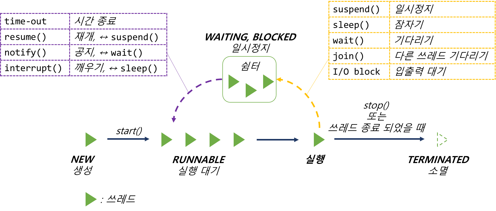

Ch13-18~21. daemon thread
0. 목차
Chapter13. 쓰레드
Ch13 - 18. 데몬 쓰레드(daemon thread)
Ch13 - 19. 데몬 쓰레드(daemon thread) 예제
Ch13 - 20. 쓰레드의 상태
Ch13 - 21. 쓰레드의 실행제어
Ch13 - 18. 데몬 쓰레드(daemon thread)
▶ 데몬 쓰레드(daemon thread)란?
▷ 일반 쓰레드(non-daemon thread)의 작업을 돕는 보조 역할
▷ 일반 쓰레드가 모두 종료 시, 데몬 쓰레드는 자동 종료
▷ 가비지 컬렉터(GC), 자동 저장, 화면 자동 갱신 등에 사용
▶ 데몬 쓰레드 작성 방법
▷ 무한 루프와 조건문을 이용하여
▷ 실행 수 대기하다가 특정 조건 만족 시, 작업 수행
▷ 작업 수행 후, 다시 대기하도록 작성
public void run() {
while (true) {
// 무한루프 돌다가 3초동안 쉬는 시간
try {
Thread.sleep(3 * 1000); // 3초마다
} catch(InterruptedException e) { }
// autoSave의 값이 true이면, autoSave()를 호출
if (autoSave) {
autoSave();
}
}
}
▶ 데몬 쓰레드의 반환
▷ 쓰레드가 데몬 쓰레드인지 확인
▷ 데몬 쓰레드이면 true를 반환
boolean isDaemon()
▶ 쓰레드 → 데몬 쓰레드 or 사용자 쓰레드
▷ 쓰레드를 데몬 쓰레드로 또는 사용자 쓰레드로 변경
▷ 매개 변수 on을 true로 지정하면 데몬 쓰레드가 됨
void setDaemon(boolean on) // 쓰레드 → 사용자 쓰레드
void setDaemon(boolean true) // 쓰레드 → 데몬 쓰레드
void setDaemon(boolean on)은 반드시start()호출 전에 실행해야 함
그렇지 않으면IllegalThreadStateException발생
Ch13 - 19. 데몬 쓰레드(daemon thread) 예제
▶ Runnable 구현 클래스
▷ Thread 생성을 위해 Runnable 구현
public class PlayDaemonThread implements Runnable
▶ 데몬 쓰레드 작성
▷ Runnable을 구현했으니 run() 생성
public void run() {
}
▷ run() { } 구현부 작성
▷ 데몬 쓰레드가 하는 일 작성
▷ 3초마다 autoSave의 값이 ture면 autoSave()를 호출
public void run() {
while(true) {
try {
Thread.sleep(3 * 1000); // 3초마다
} catch(InterruptedException e) { }
// autoSave의 값이 true이면 autoSave()를 호출
if(autoSave) autoSave();
}
}
▷ autoSave() 작성
public void autoSave() {
System.out.println("작업파일 자동 저장 완료");
}
▶ 메인 쓰레드 작성
▷ setDaemon() → start()
▷ 이 순서가 바뀌면 예외 발생
▷ setDaemon()이 있어야
▷ main 쓰레드 종료 시, 데몬 쓰레드인 run()의 무한 루프 자동 종료 → 프로그램 종료
public static void main(String[] args) {
Thread t = new Thread(new PlayDaemonThread()); // Thread(Runnabale r), r : Runnable 인터페이스를 구현한 클래스 객체
t.setDaemon(true);
t.start();
}
▷ 10초까지 도는 구조
▷ 10초 이후 종료
▷ 5초 이후부터 autoSave 호출 가능
static boolean autoSave = false;
...
for(int i=1; i <= 10; i++) {
try{
Thread.sleep(1000);
} catch(InterruptedException e) { }
System.out.println(i);
// 5초 이전 까지는 autoSave가 false
// 여기가 true가 되어야 run()의 if문이 true가 되어 autoSave() 호출
// run의 if문 : if(autoSave) autoSave(); → if(true) autoSave();
if(i==5) autoSave = true;
}
System.out.println("프로그램 종료");
▷ 전체
package baek;
public class PlayDaemonThread implements Runnable {
static boolean autoSave = false;
public static void main(String[] args) {
Thread t = new Thread(new PlayDaemonThread());
t.setDaemon(true);
t.start();
for(int i=1; i <= 10; i++) {
try{
Thread.sleep(1000);
} catch(InterruptedException e) { }
System.out.println(i);
if(i==5) autoSave = true;
}
System.out.println("프로그램 종료");
}
public void run() {
while(true) {
try {
Thread.sleep(3 * 1000);
} catch(InterruptedException e) { }
if(autoSave) autoSave();
}
}
public void autoSave() {
System.out.println("작업파일 자동 저장 완료");
}
}
// console
1
2
3
4
5 // 여기서 부터 3초마다 autoSave() 호출
6
작업파일 자동 저장 완료 // autoSave() 호출 완료
7
8
작업파일 자동 저장 완료 // autoSave() 호출 완료
9
10
프로그램 종료 // 10초 지나면 프로그램 종료, main 쓰레드 종료 → 데몬 쓰레드도 종료
Ch13 - 20. 쓰레드의 상태
▶ 1. NEW
▷ 쓰레드가 생성되고 아직 start()가 호출되지 않은 상태
▶ 2. RUNNABLE
▷ 실행 중 또는 실행 가능한 상태
▶ 3. BLOCKED
▷ 동기화 블럭에 의해서 일시정지 된 상태
▷ lock이 풀릴 때 까지 기다리는 상태
▶ 4. WAITING
▷ 쓰레드의 작업이 종료되진 않았지만 실행 가능하지 않은(unrunnable) 일시정지 상태
▶ 4. TIMED_WAITING
▷ 쓰레드의 작업이 종료되진 않았지만 실행 가능하지 않은(unrunnable) 일시정지 상태
▷ TIMED_WAITING : 일시정지 시간이 지정 된 경우를 의미
▶ 5. TERMINATED
▷ 쓰레드의 작업이 종료 된 상태

Ch13 - 21. 쓰레드의 실행제어
▶ 쓰레드의 실행제어란?
▷ 쓰레드의 실행을 제어할 수 있는 메서드를 제공
▷ 이 메서드들을 활용하여 보다 효율적인 프로그램 작성 가능
▶ 쓰레드의 실행제어 메서드
▷ static void sleep(long millis)
▷ static void sleep(long millis, int nanos)
- millis : 1/1000초, 5초로 지정하려면 5000이라 적어야 함
- 지정 된 시간(1/1000초) 동안 쓰레드를 잠들게 함(sleep)
- 지정 시간이 지나면 자동적으로 다시 실행 대기 상태가 됨
▷ static void yield()
- 실행 중 자신에게 주어진 실행 시간을 다른 쓰레드에게 양보(yield)하고
- 자신은 실행 대기 상태가 됨
static 메서드
다른 쓰레드에게 적용할 수 없음
자신에게만 적용 가능
- sleep : 다른 쓰레드에게 자라고 할 수 없음, 자기가 자는 건 가능
- yield : 다른 쓰레드에게 양보하라고 할 수 없음, 자기가 양보하는 건 가능
▷ void join()
▷ void join(long millis)
▷ void join(long millis, int nanos)
- 지정 된 시간 동안 쓰레드가 실행되도록 함
- 지정 된 시간이 지나거나 작업 종료 시,
- join()을 호출한 쓰레드로 다시 돌아와 실행을 계속 함
- 다른 쓰레드를 기다리는 게 join
▷ voin interrupt()
- sleep()이나 join()에 의해 일시정지 상태인 쓰레드를 깨워 실행 대기 상태로 만듦
- 해당 쓰레드에서는 Interrupted Exception이 발생함으로
- 일시정지 상태를 벗어나게 됨
- sleep()을 깨우거나 join()을 멈추게 함
▷ void stop()
- 쓰레드를 즉시 종료 시킴
▷ void suspend()
- 쓰레드를 일시정지 시킴
- resume()을 호출하면 다시 실행 대기 상태가 됨
▷ void resume()
- suspend()에 의해 일시정지 상태에 있는 쓰레드를 실행 대기 상태로 만듦